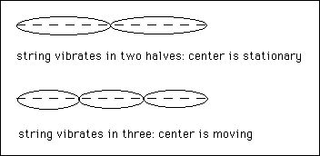

String Divisions and Harmonics
by Dante Rosati M.M., 1998
Harmonics and string division are not the same thing. That's why when you play a natural harmonic on the guitar, you usually get a different note from what stopping the string would produce. When you pluck a string, all harmonics are present simultaneously. This in itself is stupendous, because harmonic vibration requires nodes where the string is divided, and these nodes are the stationary points on the string, that is, they do not move. So, the string will vibrate in two halves (octaves of the open string) and the exact center (12th fret) will be the stationary node. However, when the string vibrates in threes, which it is doing simultaneously, the midpoint of the string will be the part of the string that is vibrating with the greatest amplitude. How can the same point on the string be both stationary and moving at the same time? Good question.

There are several demonstrations you can do on the guitar to help understand this. After plucking the string, touch it lightly at the 12th fret. What you have done is caused that spot to be only a node, only stationary. All harmonics that have a node at the 12th fret (all even numbered harmonics) will continue to vibrate, whereas harmonics that have the middle point of the string moving (all odd numbered harmonics) are silenced. When you touch the string, you are muting half the harmonics and leaving half. If, after plucking the string, you instead touch at the seventh fret, you are forcing a node there and muting any harmonics that move the string there. The seventh fret is a three-division of the string, so you will still hear a twelfth.
Now, the point at which you pluck the string effects what harmonics are present as well. If you pluck the string at the 12th fret you are destroying any hope of a node there, so there will be no even numbered harmonics. If you then touch the string at the twelfth fret, forcing a node and cutting out any non-even numbered harmonics, you will be left with - silence. If you pluck the string at the 12th fret and touch it at the seventh, the odd numbered harmonic will still be heard.
When you play a harmonic at the seventh fret, which divides the string in three, each of the three sections are vibrating and are really producing three unison notes a twelfth above the open string. The string does not also vibrate in 2/3 its length, if it did you would hear a fifth above the open string, which is not there. So, when you stop the string at that point to produce a note a fifth above the open string, you are doing something which has absolutely nothing to do with harmonics. Look at how the fourth appears as 3/4 of the string. There is no fourth at all in the overtone series, you have to go up to the 43rd harmonic to even get within 14 cents of it, and it will never be exact. True, the interval of a fourth exists between the 3rd and 4th harmonic, but this is second-generation, not a first-generation interval with the fundamental.
I have come across several instances of writing about music, harmonics, the lambdoma, and the like, which confuse the difference between harmonics and string division. I only really began to understand the difference after I constructed two monochords, one a sitar converted so that harmonics can be played against a scale, and the other a monochord with a moveable bridge which divides the string. All the reading in the world about these phenomena will not give you what a few hours with an actual monochord will. Even the guitar can be used to explore this, except the fingerboard is laid out for equal temperament. There is an article by John Starrett on refretting your guitar here, but I haven't ventured as far as mangling one of my guitars yet.
The following table gives the first seven partials and string divisions. The first column has the partials, which are also the simple divisions of the string (1/2, 1/3, 1/4, 1/5, 1/6 1/7). The remaining columns show the other divisions of the string. Clearly there are notes produced by string division which are not produced by the equivalent overtone series. All notes of the major scale, except the seventh and the second, are produced by the first six divisions. In just intonation, the seventh is generated by tuning up a perfect fifth and then up a major third. This is the same as 8/15. The second is reckened as 9/10, although the ninth partial is closer to what we hear as a major second. The question of how our major scale was derived from partials and/or string divisions is far from settled. To my mind, there is no question that our musical system is rooted in the overtone series and string divisions, even if the details remain obscure.
The seventh partial, as well as the notes produced by various seven-divisions, are outside our musical system as it has developed historically. That is not to say that there cannot be musics that utilize it, but our musical systems have always used the "senarius" or numbers up to six, to generate our scales. Note that the minor third even appears here (5/6), although the minor sixth (5/8) would not appear until the eight-divisions.
Colors show families of notes accepting the notion of octave equivalence. That is, all octaves of the open string are red, all fifths and twelfths are blue, all major thirds and tenths are yellow. You can see the new notes produced as a new color. The seven divisions are not colored, because we do not use any of these intervals in most of our music (subject to revision by future generations).
| 1/1
first partial |
||||||
| 1/2
second partial octave |
2/2 | |||||
| 1/3
third partial twelfth (octave+fifth) |
2/3
fifth |
3/3 | ||||
| 1/4
fourth partial fifteenth (two octaves) |
2/4
octave |
3/4
fourth |
4/4 | |||
| 1/5
fifth partial major seventeenth (two octaves+major third) |
2/5
major tenth (octave+major third) |
3/5
major sixth |
4/5
major third |
5/5 | ||
| 1/6
sixth partial nineteenth (two octaves+fifth) |
2/6
twelfth (octave+fifth) |
3/6
octave |
4/6
fifth |
5/6
minor third |
6/6 | |
| 1/7
seventh partial subminor twenty-first (two octaves+subminor seventh) |
2/7
subminor fourteenth (octave+subminor seventh |
3/7
subminor tenth (octave+subminor third |
4/7
subminor seventh |
5/7
subminor fifth |
6/7
subminor third |
7/7 |